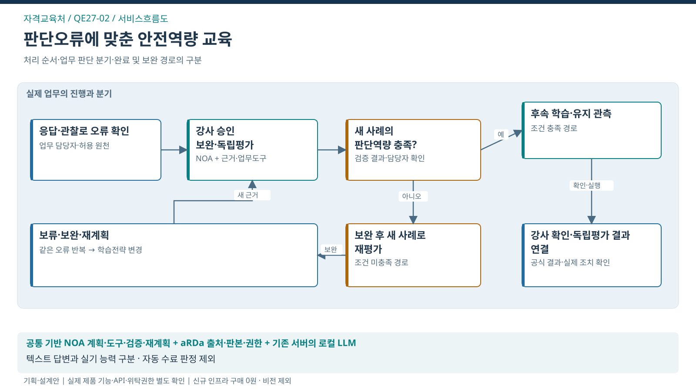

서비스흐름도 · 판단오류에 맞춘 안전역량 교육
이 도식의 목적 · 처리 순서·판단 분기·완료 및 재계획 경로

도식 원본 확대 · SVG · PPT 삽입용 PNG · 1600×900


핵심 해석
- 대표 사건: 학습목표·판단근거·보완·새 사례 평가
- 처별 고유 로직: 진단→강사승인→보완→독립평가 순환
- 조건 분기: 새 사례의 판단역량 충족? → 충족 시 후속 학습·유지 관측 / 미충족 시 보완 후 새 사례로 재평가
- 공식 결과: 강사 확인·독립평가 결과 연결
- 책임 경계: 텍스트 답변과 실기 능력 구분 · 자동 수료 판정 제외
- 검증 상태: 실제 제품 기능·API·위탁권한·도입효과 미확정
수강 완료를 넘어 새로운 안전상황에서 필요한 판단을 수행하도록 지원함.
- 담당자는 학습목표·판단근거·보완·새 사례 평가를 중심으로 근거를 확인하고, AI가 제안한 계획을 검토한 뒤 공식 업무의 결과와 연결함.
- 아래는 제안을 설명하기 위한 화면 구성안임.
설계 예시 · 실제 운영 자료가 아님 · 담당자: 교육 기획자·체험교육 강사·교육생
업무 화면의 핵심 구성
보완 학습 대기함
가상 학습자 L-08 / 방어운전 단원
확인한 근거
- 정답 선택은 맞았으나 이유 설명 미흡
- 강사 관찰: 돌발상황 판단 지연
- 기존 보완문항과 유사한 예제만 수행
AI가 준비할 계획
- 근거 설명과 관찰을 역량 항목에 연결
- 강사가 확인한 보완 질문·실습 계획 구성
- 학습에 사용하지 않은 사례로 재평가
담당자가 확인할 결과
강사 평가와 독립 사례 결과·후속 보완 책임이 연결됨; 공식 수료는 기존 절차
공식 판단과 승인 권한은 담당자에게 유지
서비스 흐름
| 단계 | 업무와 사용자 행동 | 나오는 결과 |
|---|---|---|
| 1. 대상 확인 | 학습목표·판단근거·보완·새 사례 평가와 적용 기준·권한 확인 | 업무 대상·목표·완료조건 |
| 2. 근거 검토 | 원자료의 시점·판본·누락·불일치 확인 | 유효한 근거와 확인할 쟁점 |
| 3. 계획 제안 | 응답 근거와 강사의 관찰을 바탕으로 보완 학습·실습 질문을 바꾸고 처음 보는 사례로 전이를 검증 | 검토할 계획·필요 자료·후속 담당자 |
| 4. 전문 검토 | 텍스트 답변만으로 실기 능력을 확정하지 않으며 강사 관찰이 없으면 미확인 | 확정된 조치·보완 또는 보류 이유 |
| 5. 공식 절차 연결 | 강사가 승인한 보완 학습계획의 배정 | 접수/등록 결과와 사건의 일치 확인 |
| 6. 효과 확인 | 새 사례 판단 수행도 / 후속 유지도 / 강사·교육생 총부담 | 업무 완료와 국민·기업 편익을 구분한 결과 |
새 근거가 들어오면 달라지는 처리
새 사례에서 같은 판단오류가 나오면 수료 판정과 분리해 보완 질문의 난이도·상황을 변경.
- 오류가 반복된 판단 근거를 다시 확인
- 다른 상황의 반례·설명 과제를 제안
- 강사가 실습과 독립 재평가를 승인
변경된 근거가 승인된 계획에 영향을 주면 이전 승인을 그대로 사용하지 않음. 필요한 검토 단계로 돌아가 근거·계획·승인판본을 함께 갱신함.
화면별 정보와 책임
| 화면 ID | 화면 목적 | 핵심 정보 | 책임 역할 |
|---|---|---|---|
| QE-UI-01 | 보완 학습 대기함 | 가명 학습자키·역량항목·보완 필요상태·교육회차 | 담당자 |
| QE-UI-02 | 판단근거·강사 관찰 | 응답근거·강사 관찰·루브릭 판본·평가 결과·미확인 항목 | 담당자·전문가 |
| QE-UI-03 | 맞춤 보완 계획 | 보완 목표·학습활동·허용 교육과정·재평가 조건·계획판본 | 담당자·전문가 |
| QE-UI-04 | 강사 승인·배정 확인 | 강사 확인·승인판본·배정 ID·교육일정·실제 수행·대사상태 | 승인권자·공식 시스템 |
| QE-UI-05 | 새 사례·유지 평가 | 독립 새 사례 평가·관측기간·역량유지 결과·학습자 분모·보완과제 | 현업·평가자 |
예외가 발생했을 때
| 발생 상황 | 실제 서비스의 처리 |
|---|---|
| 자료가 없음 | 대상이 없는 상태와 일부 근거 누락을 구분하고 추가 자료를 요청 |
| 근거가 바뀜 | 영향받는 계획과 승인을 표시하고 필요한 단계부터 재검토 |
| 권한이 회수됨 | 자료 조회·실행을 차단하고 권한 있는 담당자에게 인계 |
| 공식 시스템 응답이 없음 | 결과 미확인으로 유지하고 조회로 대사; 무조건 다시 등록하지 않음 |
| 업무 보류·취소 | 새 실행을 막되 기존 외부 결과는 정식 확인·정정 절차로 처리 |
개인 초안·메모는 조직 사건의 공식 근거와 구분함. 담당자가 제출한 자료만 해당 권한 범위에서 연결하며, 공식 지식 반영은 검수를 거침. 본 제안 화면에는 테스트 상태 선택기와 모의 실행 버튼을 두지 않음.
인수·검수 기준
- 영상·생체정보 판독, 비공개 시험문항 학습, 자동 자격·수료 결정은 제공 기능에 포함하지 않음.
- 데이터가 비어 있거나 일부 누락돼도 완료 결과를 추정하지 않음.
- 문서 출처·판본·대상·공식 결과를 추적할 수 있어야 함.
- 성과 측정 조건: 동일 역량·난이도·노출 조건의 학습자군; 학습/평가 자료 분리.
- 본문 16px 이상, 키보드 탐색·명확한 포커스·모바일 재배치·200% 확대를 기본 설계로 적용함. 전체 접근성 인증이나 실제 API/제품 검증 완료를 뜻하지 않음.